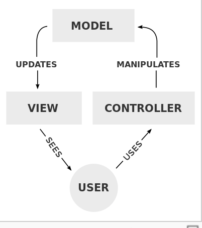

What is it?
Active Record is the M in MVC(model, view, controller). MVC is a architectural pattern to create and update user interfaces. The model updates the view, the view displays to the user, the user uses the controller, and the controller manipulates the model.
Active record is the layer of this architecture that takes care of business data and logic. It acts as a database management system for Rails.
When using Active Record, make sure to remember and all important CRUD.